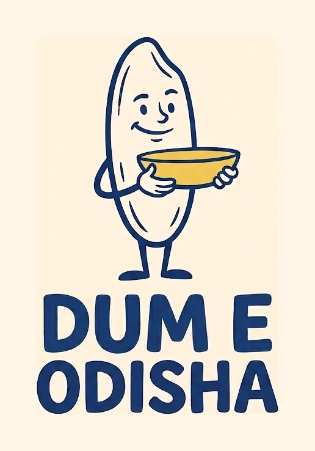
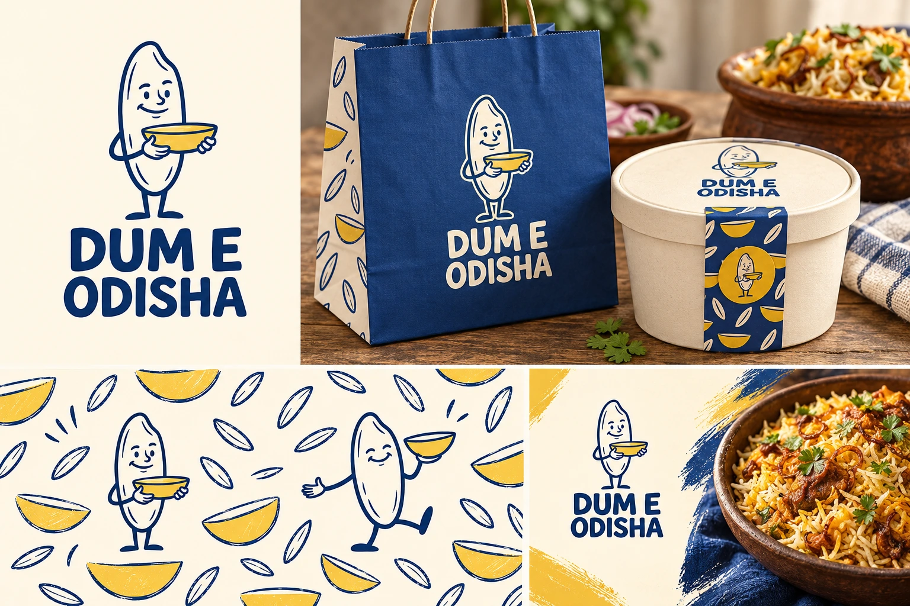

Food-brand explorations / 01
The Rice Club
A rice-grain host turns the brand into a friendly character. Blue and butter yellow build a recognisable world of stickers, packaging and hand-drawn moments.

Lively.
welcoming, collectable.
The food characters and illustrated branding in the Slurpee, Food for Thought, Tommy’s, Ornico and Bunny examples suggest how one character can lead a whole visual system. This is an original rice host, not a cup, duck or rabbit.
The character offers personality and social storytelling, but needs a simpler symbol-only version for small packaging seals.

The identity, applied
A whole visual world.
A character can carry social posts and small printed extras without requiring a new logo for each campaign.


A small system, with a clear idea
What makes it
this direction.
- Graphic device
- One original rice-grain character, repeated in a small family of clear poses.
- Typography behavior
- Sturdy friendly display lettering; simple sans-serif information.
- Packaging direction
- Cream tubs, blue paper carriers and small yellow sticker accents.
- Draft voice example
- “Come hungry. Bring good company.”
Why it belongs in this round.
The food characters and illustrated branding in the Slurpee, Food for Thought, Tommy’s, Ornico and Bunny examples suggest how one character can lead a whole visual system. This is an original rice host, not a cup, duck or rabbit.
The full business name remains Dum E Odisha. The route name describes a creative direction, not a proposed rename. This is a distinct alternative to compare with the current and script-led ideas.
Artwork is generated raster exploration, not an approved vector master or manufactured packaging. No recipe, ingredient sourcing, founding story or customer result is implied by the visual direction. Final selection, small-size refinement and production proofing remain separate steps.